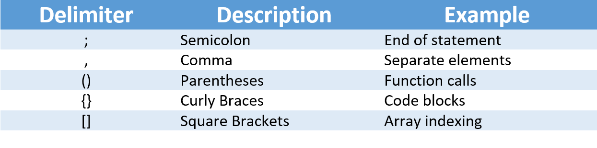

home
Character Set
Character Set
Letters
- Uppercase :A,B,C,......Z
- Lowercase :a,b,c,......Z
Digits
- 0,1,2,3,4,5,6,7,8,9
Special Characters
- In C, special characters are used to perform various tasks like controlling the cursor movement, displaying non-printable characters, and more.
- Here's a table of some special characters in C and their uses:
- Example :printf("Hello\nWorld"); will print "Hello" and "World" on separate lines due to \n.
- printf("This is a tab\tseparated"); will print with a tab space between "tab" and "separated" due to \t.

White Space Characters
- In C, there are a few special white space characters you can use.
- Here's a table outlining some of them:
- Examples :
Program.c

C Delimiters
- In C, delimiters are characters used to separate parts of a program or data.
- Here's a basic table for some commonly used delimiters in C:
- These delimiters are essential for structuring C code, such as ending statements with semicolons, separating function arguments with commas, and enclosing code blocks within curly braces.
